Transform Your Floors.
Elevate Your Space.
From bold metallic looks to durable flake and quartz finishes, Kings Metallic Flooring LLC brings custom epoxy flooring and resin coating designs to garages and other spaces.
Request a Free EstimateCall 806-412-9647Find the finish that fits your style.
Ask about colors, patterns and finish options for your project.
Metallic Epoxy Flooring
Flowing metallic effects with depth, movement and custom patterns.
Flake Flooring Systems
Decorative flake finishes and color blends for garages and other spaces.
Quartz Broadcast Flooring
Quartz aggregate broadcast systems for a distinctive textured decorative surface.
Resin Epoxy Coatings
Epoxy and resin coating options selected around your space and project needs.
Custom Colors & Designs
Custom color blends, patterns and personalized looks to suit your vision.
Before – Garage Floor Preparation
Photos showing the existing floor conditions and preparation work before the finished flooring system is installed.
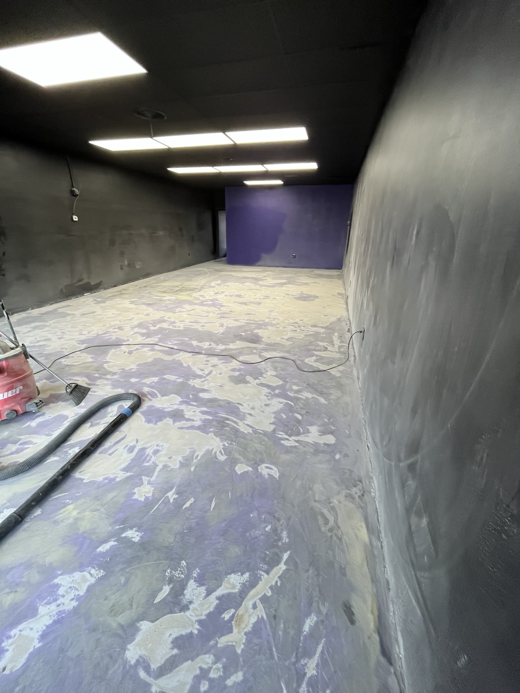
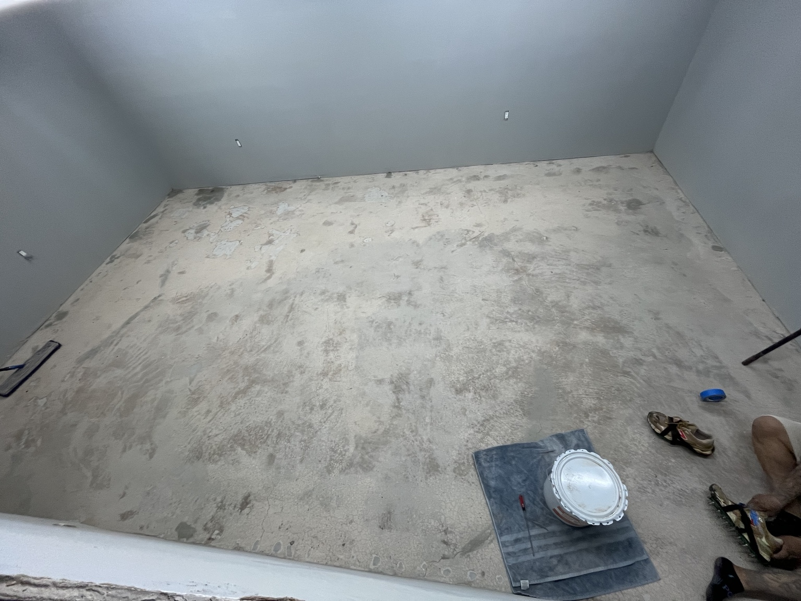
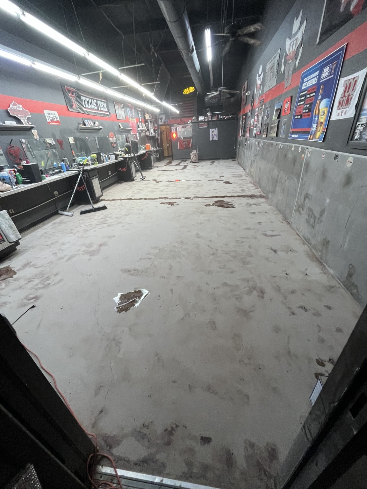
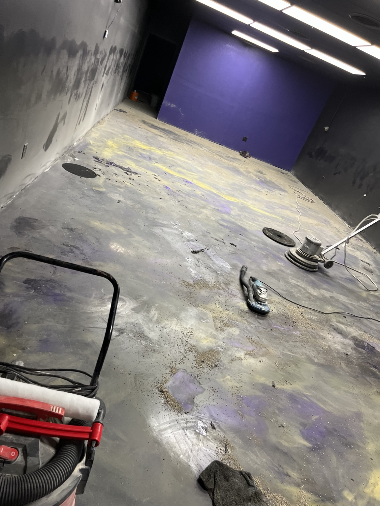
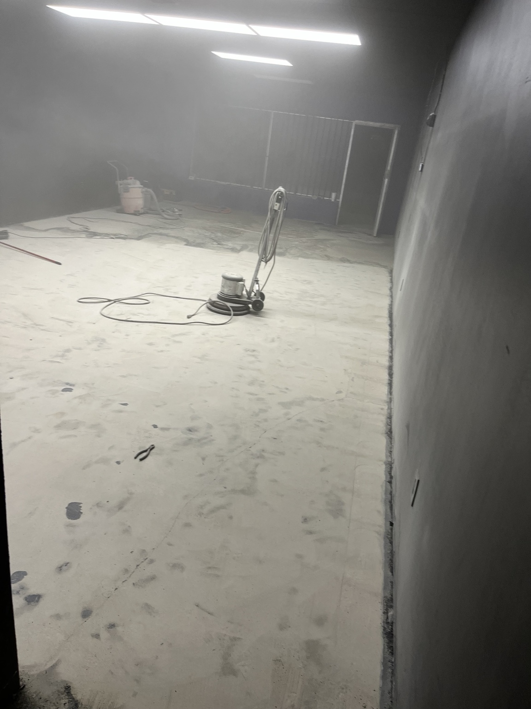
After – Custom Metallic Epoxy Floors
Finished flooring examples featuring bold custom color movement, metallic effects and a glossy look.
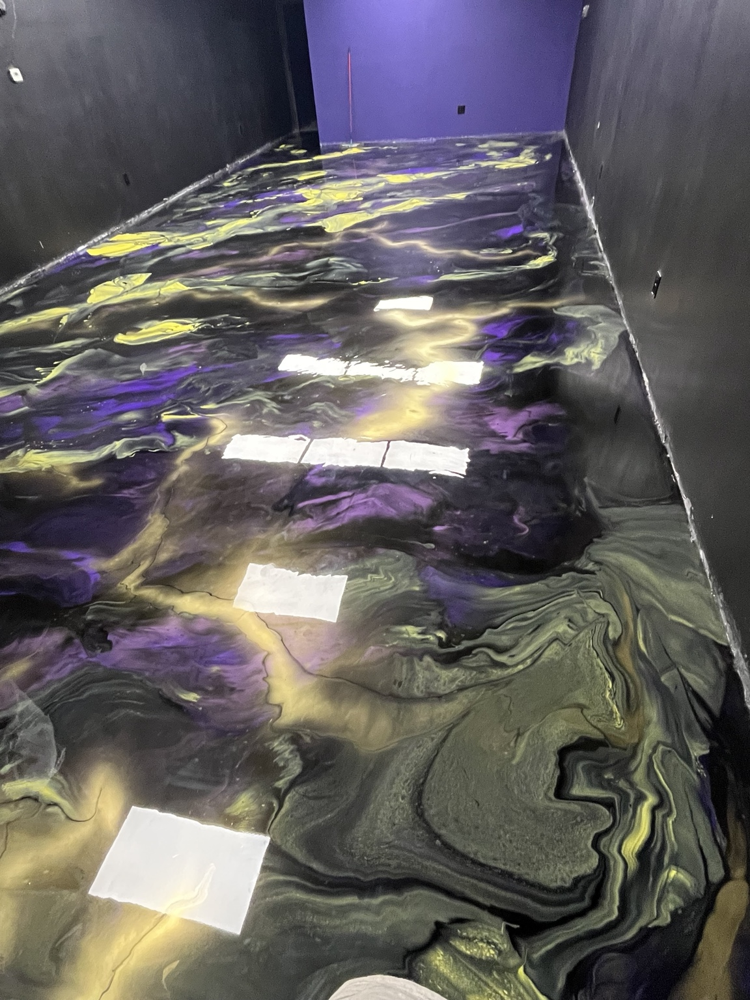
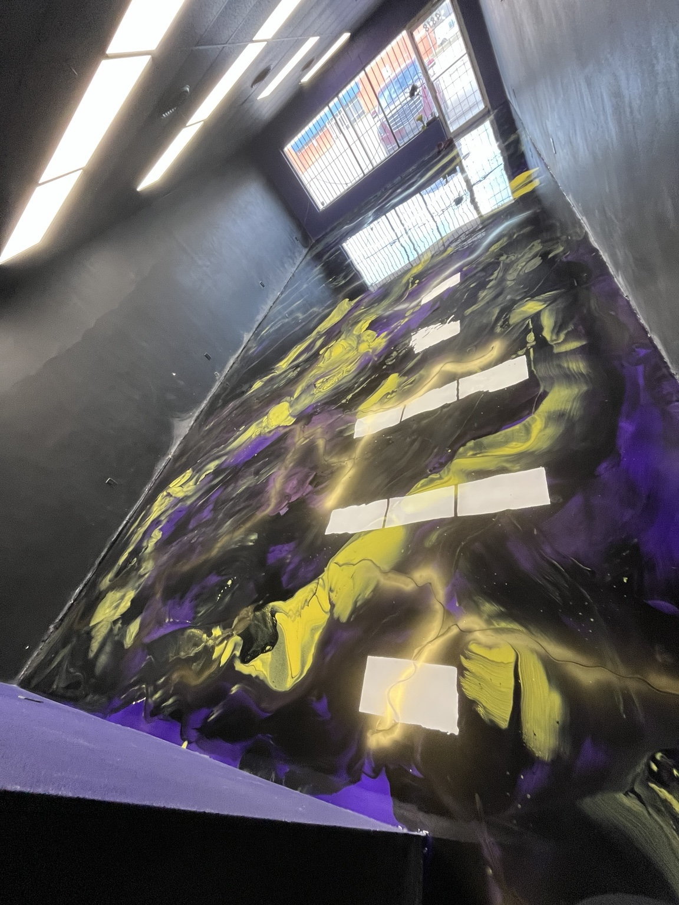
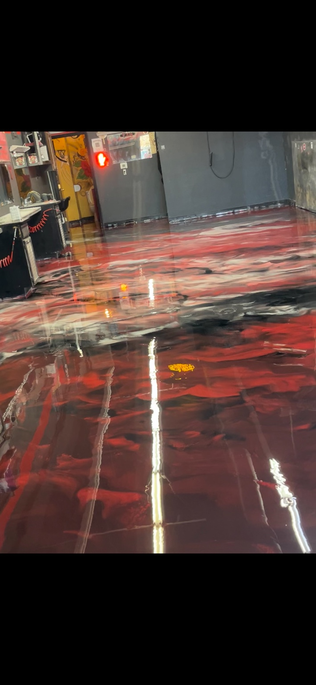
More Floors. More Possibilities.
A few more examples of custom flooring work, from polished flake systems to one-of-a-kind metallic designs.
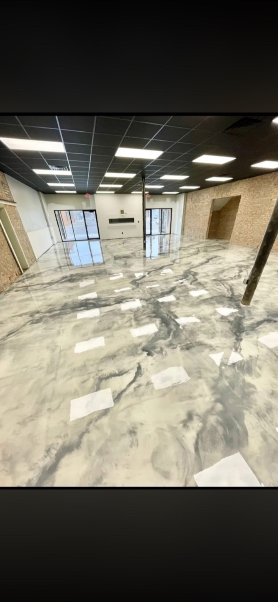
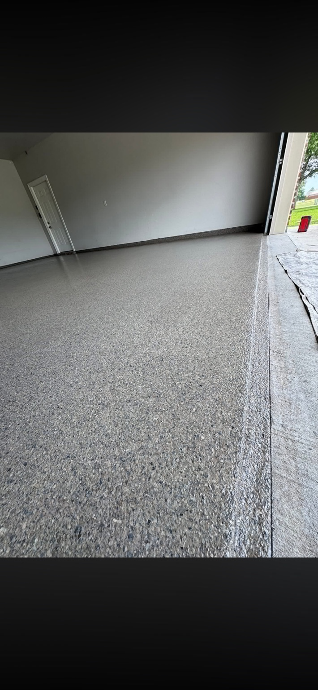
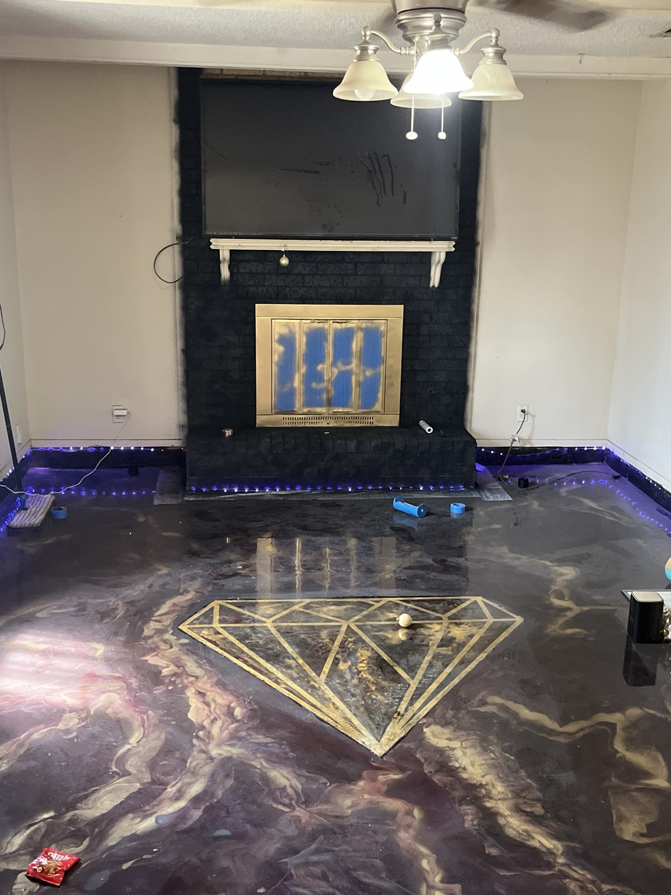
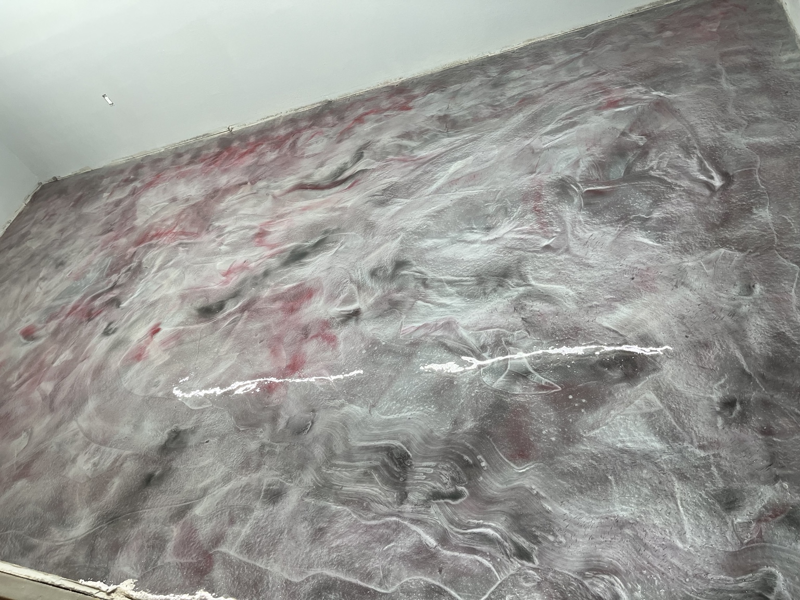
Garage floor packages
Promotional package pricing. Confirm final pricing and project details with your estimate.
Two-Car Flake Garage System
Two-Car Metallic Garage System
Transform Your Space. Make It Epic.
Based in Lubbock, Texas, serving surrounding communities. Will travel for projects. English and Spanish welcome—Se habla español.
Ready to transform your floor?
Contact us to discuss your space, approximate size, and the finish or colors you like.
Call or Text
Service Area
Lubbock, Texas and surrounding areas · Will travel